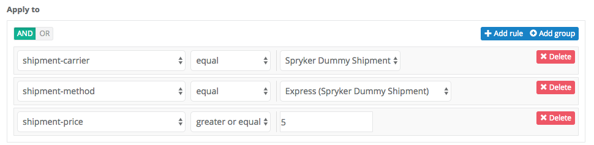

Release Notes - August - 1 2017
- Release Notes - August - 1 2017
- Announcements
- Features
- Improvements
- Create Injection Points for Project Logic for Twig Templates
- Optional Category Template
- Shipment Delivery Time
- Reset Password
- NULL Password in Config for Storage
- Missing Breadcrumbs
- Elasticsearch Client Config
- Architecture Sniffer
- Increment Counter for Unlimited Vouchers
- Change Path to last_yves_request Log
- Allow Check for Breadcrumbs in Communication
- Exclusive Custom Search and Storage Client Configuration
- Update to Allow symfony/http-kernel V2 or V3
- Bugfixes
- Unmapped Sort on Empty Category
- Drop Timestamped Storage Keys
- Dependencies Fixes
- currentLocale in Stores.php
- Composer Dependency to Kernel for CmsGui
- Count Statements
- Guzzle Option 'strict' => true
- Documentation Updates
Announcements
PHP 7.2 is There Soon / EOL for PHP5.6
With the release of PHP 7.2 we want our Spryker code to stay cutting edge and using the best features available. Soon we want to start leveraging the new typehinting features the language provides and for that we need to stop supporting legacy version 5.*.
With the end of October we stop supporting PHP 5.6 and PHP 7.0. Please make sure your infrastructure is running on 7.1+ before that. Read gophp71.org for details on why 7.1+ is the next minimum version.
Features
Shipment Discount
Current Spryker discounts (vouchers and cart rules) are calculated with fixed value or percentage reduction and those are applied to value of product(s). One of yet another very common discount concepts is free shipping or discounts that are applied on shipping costs. You might want to offer free shipment for various reasons. One of the most common ones is to motivate customers to increase the basket volume by offering free shipping for example for orders over 50€.
With this feature our current discount engine now makes it possible to define discounts that are applied not only to products, but also to shipping expenses.
For this reason three shipment discount types have been implemented:
- Carrier – a discount by a specific carrier (DHL, UPS etc)
- Method – a discount by a shipment method (To pick-up point, Door to Door etc)
- Price – a discount to a delivery price
You can now create discount calculation rules like the one in the example below. The example below will ensure that if the selected shipment carrier is the Spryker Dummy Shipment, selected shipment method is the Express and the price of this Express shipment method is greater than or equal to 5, then the discount is applied. If for example you remove the middle rule ("shipment-method equal Express (Spryker Dummy Shipment)", then the discount will be applied for all shipment methods from Spryker Dummy Shipment shipment carrier if the price of the shipment method is greater than or equal to 5.

Affected Modules
| Major | Minor | Patch |
|---|---|---|
| - ShipmentDiscountConnector 1.0.0 | - Shipment 5.1.0 | n/a |
Documentation
For module documentation see: Shipment Module Guide.
Migration Guides
To upgrade, follow the steps described below:
-
Apply every minor and patch:
composer update "spryker/*" - Once that is done, upgrade to the new module major:
composer require spryker/shipment-discount-connector:"^1.0.0"
Improvements
Create Injection Points for Project Logic for Twig Templates
Before it was not possible to extend Spryker GUI tables and replace Twig template paths. With this release we are introducing configuration points through an extension of the abstract class to allow extensions.
Affected Modules
| Major | Minor | Patch |
|---|---|---|
| n/a | n/a | - Gui 3.7.1 |
Optional Category Template
In Category module an assigned template is not required (to make the migration easier), however in CmsBlockCategoryConnector this field was required. With this release now a category template is not required in both modules.
Affected Modules
| Major | Minor | Patch |
|---|---|---|
| n/a | n/a | - CmsBlockCategoryConnector 2.0.1 |
Shipment Delivery Time
One of the Shipment models and ShipmentMethodTransfer had the wrong PHPDoc information for delivery time. This issue is fixed now. Before, when expecting a string, you would get string or integer. To avoid confusion we have changed return type of getDeliveryTime to the proper one (int|null).
Affected Modules
| Major | Minor | Patch |
|---|---|---|
| n/a | n/a | - Shipment 5.0.2 |
Reset Password
We had templates for changing a customer password, but this did not support passing a recovery token. With this release we deliver the complete functionality of password reset, including the request for it and update.
Affected Modules
| Major | Minor | Patch |
|---|---|---|
| n/a | - Customer 6.2.0 | n/a |
NULL Password in Config for Storage
After predis/predis library changed the approach of handling connection, params had an issue with supporting its new versions (>=1.1.0). Now Spryker config handling is adjusted to Predis library.
Affected Modules
| Major | Minor | Patch |
|---|---|---|
| n/a | n/a | - Collector 5.1.6 - Storage 3.1.1 |
Missing Breadcrumbs
In some pages of Zed the breadcrumb navigation was missing. We added all missing navigation entries into the navigation.xml files to fix all breadcrumbs.
Affected Modules
Elasticsearch Client Config
We've added new environment config parameters to be able to customize the Elasticsearch connection configuration with Elastica Client.
Affected Modules
| Major | Minor | Patch |
|---|---|---|
| n/a | - Application 3.3.0 - Collector 5.2.0 - Heartbeat 3.1.0 - Search 6.5.0 |
n/a |
Architecture Sniffer
Previously we only had a Zed backend page displaying architecture violations. A backend page listing all the sniffer rules for each application namespace has been added now including a short explanation. We now offer a CLI command as convenience wrapper to quickly check either modules or complete paths. We also introduced multiple priorities and use 2 by default for now. 3 stays an experimental.
Please note that the sniff commands now are as follows:
console code:sniff:style(the alias forcode:sniffis still present for BC)console code:sniff:architecture
Tip: You can use console c:s:s and console c:s:a as shortcuts.
For guidelines and documentation see: Code Architecture Guide.
Affected Modules
| Major | Minor | Patch |
|---|---|---|
| n/a | - Development 3.2.0 | n/a |
Increment Counter for Unlimited Vouchers
Previously the number of uses was not increased for an unlimited voucher (not limit on a number of uses). It was inconvenient with voucher of a limited use. Now the counter increases do not depend on the type of a voucher.
Affected Modules
| Major | Minor | Patch |
|---|---|---|
| n/a | n/a | - Discount 4.4.1 |
Change Path to last_yves_request Log
Previously there was no possibility to define a path for the yves_requests and they were stored under the logs directory. Those yves_reqeust files are not log files. The path for them is now configurable.
Affected Modules
| Major | Minor | Patch |
|---|---|---|
| n/a | n/a | - ZedRequest 3.1.4 |
Allow Check for Breadcrumbs in Communication
Previously we used Request::createFromGlobals() in the ZedNavigationServiceProvider. We are now using the request object from the application instead.
Affected Modules
| Major | Minor | Patch |
|---|---|---|
| n/a | - Gui 3.8.0 - ZedNavigation 1.2.0 |
- Testify 3.2.9 |
Exclusive Custom Search and Storage Client Configuration
With this release we enable setting exclusive search (Elastica) client and storage (Predis) client configuration.
Affected Modules
| Major | Minor | Patch |
|---|---|---|
| n/a | - Application 3.4.0 - Collector 5.3.0 - Heartbeat 3.2.0 - Search 6.6.0 - Storage 3.2.0 |
n/a |
Update to Allow symfony/http-kernel V2 or V3
With this update we now allow symfony/http-kernel v2 or v3. In addition to this, we have also removed unneeded symfony/http-foundation dependency.
Affected Modules
| Major | Minor | Patch |
|---|---|---|
| n/a | - Symfony 3.1.0 | n/a |
Bugfixes
Unmapped Sort on Empty Category
Previously an empty category (category that does not have products assigned to it) was throwing an Elastic exception. This was due to missing sort-s. This issue is fixed now by ignoring sort-s which are not mapped to the existing data in your Elastic.
Affected Modules
| Major | Minor | Patch |
|---|---|---|
| n/a | n/a | - Search 6.4.1 |
Drop Timestamped Storage Keys
Zed / Maintenance / Storage contained a link to drop time stamped storage keys. This was not working as expected due to a bug in a passed parameter. With this fix, now it's possible to delete time stamp storage keys successfully.
Affected Modules
| Major | Minor | Patch |
|---|---|---|
| n/a | n/a | - CollectorStorageConnector 1.0.2 |
Dependencies Fixes
Some third party modules have been locked down on bugfix level, which was making it difficult for projects to get small improvements. We want to be more allowing on core level by default for the vendor libraries that follow semantic versioning.
Affected Modules
| Major | Minor | Patch |
|---|---|---|
| n/a | - Zend 2.1.0 | - Graphviz 2.0.1 - Money 2.0.2 - Monolog 2.0.3 |
currentLocale in Stores.php
Previously the currentLocale was only set for Zed. This is now set also for Yves. A call to Store::getInstance()->getCurrentLocale() will not throw an exception in Yves anymore.
Affected Modules
| Major | Minor | Patch |
|---|---|---|
| n/a | n/a | - Kernel 3.5.1 |
Composer Dependency to Kernel for CmsGui
Composer constraint from CmsGui to Kernel module was wrong. This issue is fixed now.
Affected Modules
| Major | Minor | Patch |
|---|---|---|
| n/a | n/a | - CmsGui 4.2.2 |
Count Statements
The Cms and Price modules were wrongly not throwing an exception for an empty collection when looking for CMS pages. This has now been resolved.
Affected Modules
| Major | Minor | Patch |
|---|---|---|
| n/a | n/a | - Cms 6.1.3 - Price 4.2.1 |
Guzzle Option 'strict' => true
We have added "strict" => true for HTTP client calls to ZED, so that when redirect from HTTPs to HTTP is made, it does not drop the payload. See Guzzle documentation for allow_redirects.
Affected Modules
| Major | Minor | Patch |
|---|---|---|
| n/a | n/a | - ZedRequest 3.1.5 |
Documentation Updates
The following content has been added to the Academy: